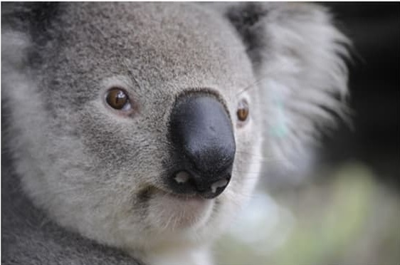
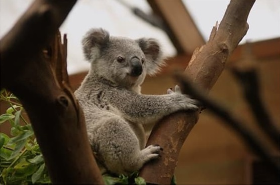

| Obra Literaria | Greacuteanero Literario | Autor | Ver Obra | Multimedia |
|---|---|---|---|---|
Cachorro de tigre |
Cuento |
Enrique Lopez Albujar |
||
Tortololita |
Cuento |
Roberto Aliaga - Paula Alenda |
> | |
Don Diimas la tijereta |
Cuento |
Ricardo Pala Soriano |
 | |
| Fuente: | *Cuentos bonitos | |||